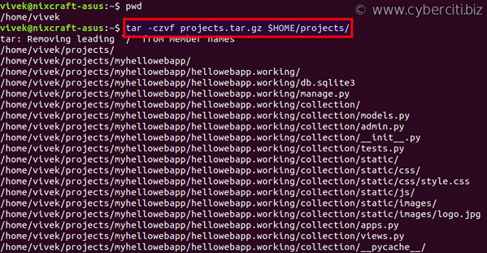
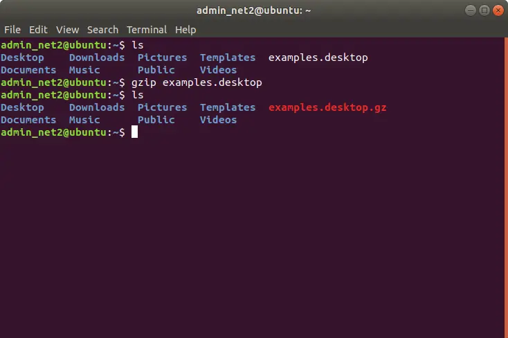
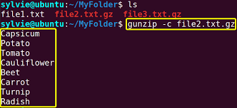
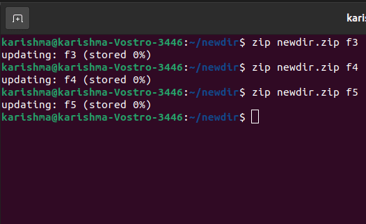
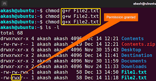
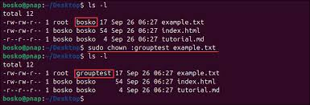
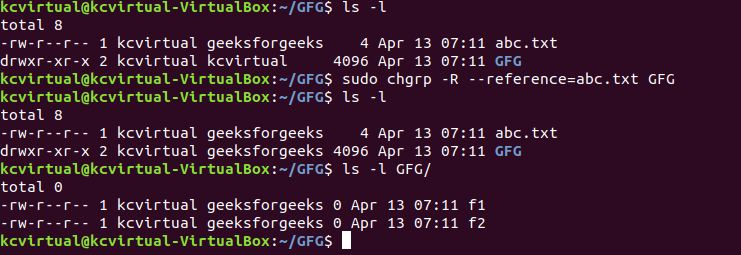

Learn the essential Linux commands and their usage
find Command
Description: The find command is used to search for files in a directory hierarchy. The find command is a powerful tool in Linux used to search for files and directories within a specified directory hierarchy. It can locate files based on a variety of criteria, such as name, type, size, permissions, ownership, modification date, and more. Additionally, find can execute commands on the files it locates, providing a versatile way to manage and manipulate files
Usage: The find command is one of the most powerful tools in Linux for searching files and directories in a directory hierarchy based on various criteria such as name, type, size, modification date, and more.
Example:
find /home/user -name "*.txt"
This will search for all .txt files in the /home/user directory and its subdirectories.
tar Command
Description: The tar command is used to create, extract, and manipulate archive files.The tar command is one of the most widely used utilities in Linux for creating, extracting, and managing archive files. It can collect multiple files and directories into a single file, known as a tarball, which can be compressed to save space. It is commonly used for backups, software distribution, and file packaging.
Usage: The tar command is used in Linux to create, manipulate, and extract archive files. It is commonly used for backup and compression purposes. The name "tar" stands for tape archive, but it is now used for managing archive files of various types, especially .tar, .tar.gz, .tar.bz2, and other formats.
Example:
tar -cvf archive.tar /path/to/directory
This creates a .tar archive from the specified directory.

gzip Command
Description: The gzip command is used to compress files using the GNU compression algorithm. It reduces file size for storage or transfer while maintaining the original file integrity. The compressed file typically has a .gz extension.
Usage: The gzip command is used in Linux to compress files, reducing their size to save disk space or to facilitate faster transfers. It stands for GNU zip, and it is commonly used to compress single files (not directories). Files compressed with gzip typically have a .gz extension.
Example:
gzip filename.txt
This compresses filename.txt into a .gz file.

gunzip Command
Description: The gunzip command is used to decompress .gz files.
Usage:The gunzip command is used to decompress files that were compressed with the gzip command. It is the inverse of the gzip command and is commonly used to restore .gz files back to their original, uncompressed state.
Example:
gunzip filename.txt.gz
This restores filename.txt.gz back to its original form.

zip Command
Description: The zip command is used to package files into a zip archive. It is a widely used utility for bundling and compressing files to save storage space and make file sharing more efficient.
Usage: The zip command is used to compress files and directories into a .zip archive. It is one of the most common methods for file compression and packaging, making it easier to transfer and store multiple files as a single compressed file.
Example:
zip archive.zip file1 file2
This creates a archive.zip file containing file1 and file2.

chmod Command
Description: The chmod command is used to change file permissions in Linux.File permissions determine who can read, write, or execute a file or directory. This command allows you to control access to files and directories.
Usage: The chmod (change mode) command in Linux is used to change the permissions of a file or directory. Permissions define who can read, write, or execute a file. It allows the system administrator or the owner of a file to grant or restrict access to users.
Example:
chmod 755 script.sh
This sets the permissions of script.sh to be readable and executable by everyone, but only writable by the owner.

chown Command
Description: The chown command is used to change the owner and group of files or directories. It allows administrators or authorized users to assign files to specific users and groups, ensuring proper access control and resource management.
Usage: The chown (change owner) command in Linux is used to change the owner and/or group associated with a file or directory. By using this command, you can transfer file ownership from one user to another or change the group associated with the file.
Example:
chown user:group filename.txt
This changes the ownership of filename.txt to user and the group to group.

chgrp Command
Description: The chgrp command is used to change the group ownership of a file or directory. It allows administrators or authorized users to assign a file or directory to a specific group, enabling effective resource sharing and access control.
Usage: The chgrp (change group) command in Linux is used to change the group ownership of a file or directory. This allows you to assign a file or directory to a different group. It does not affect the user ownership, only the group associated with the file.
Example:
chgrp developers filename.txt
This changes the group ownership of filename.txt to developers.

ps Command
Description: The ps (process status) command in Linux displays information about currently running processes on the system. It provides a snapshot of active processes, including their IDs, CPU usage, memory usage, and more. It's a vital tool for system monitoring and process management.
Usage: The ps (process status) command in Linux is used to display information about the currently running processes on a system. It provides details like process IDs (PIDs), CPU and memory usage, and the state of each process.